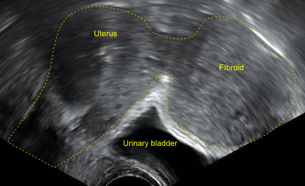

Página 1 · Parte A · Mobília
Três sistemas no mesmo cômodo — e eles se tocam
Por que um mioma ginecológico pode dar urgência urinária e constipação sem lesar rim nem intestino?
A casa já tem parede e chão — agora a mobília
A parede óssea, o chão muscular e as cordas de suspensão já estão no mapa. Não se reabre sínfise, diafragma pélvico, diafragma urogenital nem espaço perineal como conteúdo novo: isso já está sedimentado. O que muda agora é o interior — a mobília viva que a pelve abriga.
(Ponte de plataforma: o pacote da Aula 12 tratou parede, chão e cordas — sem reensino aqui.)
Três sistemas no mesmo cômodo
A segunda metade do recorte de anatomia pélvica trata das estruturas pélvicas — o que compõe o interior. A pelve não é “o cômodo do útero”: ela concentra, no mesmo espaço, estruturas de três sistemas:
| Sistema | O que está na pelve (porção pélvica) |
|---|---|
| Genital | vagina, útero, ovário, tubas (trompas) |
| Urinário | porção distal do ureter, bexiga, uretra |
| Gastrointestinal | sigmoide distal, reto, canal anal, ânus |
Regra de ouro: a pelve concentra muita estrutura clinicamente crítica no mesmo volume — não é “só útero”.
Ordem sagital: quem fica atrás de quem
No corte sagital, a ordem anteroposterior típica das vísceras pélvicas é:
sínfise púbica → bexiga e uretra → útero, colo e vagina → trato gastrointestinal (reto/canal anal)
Em frases curtas, porque a banca e o campo cobram assim:
- Bexiga e uretra ficam logo atrás da sínfise púbica.
- Útero, colo e vagina ficam atrás da bexiga.
- O bloco gastrointestinal pélvico fica atrás do bloco genital.
Se o rótulo sumir, a pergunta que resta é: quem está na frente de quem?
Por que mioma dá urgência e constipação
Compreender a relação de vizinhança explica por que doenças ginecológicas se apresentam com sintomas urinários e sintomas gastrointestinais. As estruturas estão muito próximas e correlacionadas — o sintoma “de outro sistema” pode nascer de topografia ginecológica.
Quadro clássico: leiomioma subseroso pode comprimir a bexiga e/ou comprimir o trato gastrointestinal adjacente. Não precisa haver doença primária de rim ou de cólon: a massa ginecológica ocupa o vizinho.
Nota de fronteira (honesta): este recorte não cobre fístula, planos de Hodge, conjugatas nem estreitos. Conjugatas/estreitos não vêm nesta parte 2 — permanecem no pacote da parte 1 (construção). Aqui a dívida que se paga é outra: vasos e ureter.

Achado real de imagem: massa subserosa identificável — a compressão por vizinhança é lida no texto e no esquema.
By Mikael Häggström, via Wikimedia Commons. Dedicação ao domínio público sob CC0 1.0. Fonte: https://commons.wikimedia.org/wiki/File:Subserosal_uterine_fibroid.png
Quiz — fixação
No corte sagital típico, a ordem correta de frente para trás é:
- Gabarito B. A bexiga “cola” na sínfise; o genital fica atrás dela; o GI fica atrás do genital — é a ordem que explica compressão cruzada.
- (A) inverte bexiga e útero — erro clássico de quem memoriza “útero no meio” sem eixo.
- (C) coloca o reto na frente da bexiga — confunde “fundo de saco” com “mais anterior”.
- (D) tira a sínfise do marco ósseo anterior.
- Por que cair na (A): o aluno associa “gineco = centro do desenho” e esquece a bexiga como vizinha imediata da sínfise.
Leiomioma subseroso pode causar urgência urinária e constipação principalmente porque:
- Gabarito C. o mecanismo é topográfico (vizinhança), não endócrino nem invasão obrigatória.
- (A) inventa mecanismo hormonal para sintoma mecânico.
- (B) transforma mioma em câncer invasor — confunde compressão com invasão.
- (D) amarra DIP sem necessidade.
- Por que cair em A: “mioma = estrogênio” é âncora forte e seduz a explicar todo sintoma por hormônio.